Creating the template design for announcing new web trading features
With no way to share new features released on the web platform, it was time Questrade worked on a means to communicate new features to web trading users.
Skills
Product thinking
Interaction design
Visual & content design thinking
Product & engineering collaboration
Organization
Questrade
Timeline
July-Aug 2022
Design team
1 UX designer
1 visual designer
1 content designer
The problem
Wait, a new feature was released?
To that day, there were some previously released features that some users are not aware of, which were emphasized in reports done by the user research team.
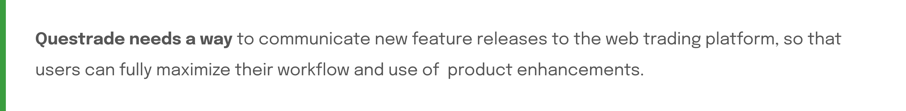
The challenge
One template, for infinite applications
How might we build a flexible and versatile way to share information about new web trading features?
Product & user requirements
01: Gathering context
Web users have never seen an announcement before; and they make up majority of the users!
Current Questrade mobile patterns were observed to identify ways of keeping consistency.
02: UX metrics
As a feature motivated by business, establishing UX goals based on minimizing negative effect on trading persona experience and user journey.
03: Narrowing the design scope
Since the announcement is to be a template...
HMW handle the announcement combinations of different feature types?
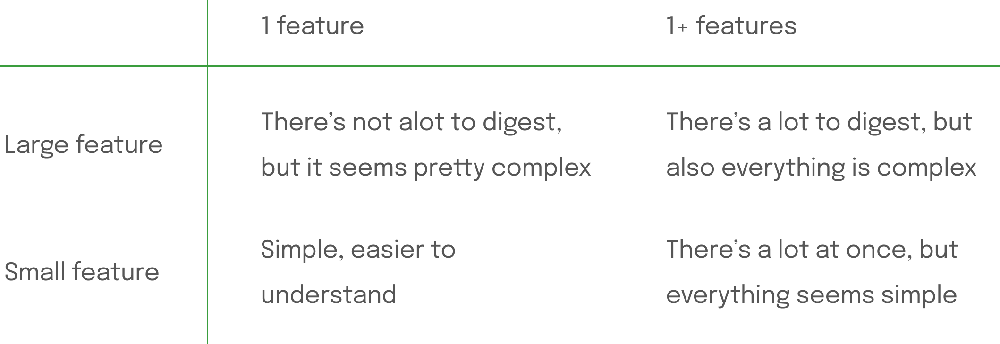
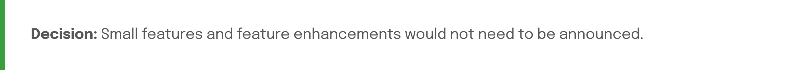
Define
04: Breaking down the problem
05: Competitive analysis
Researched & evaluated announcements on several web platforms and desktop apps.
4 of the more common patterns for web feature announcements discovered were as follows:
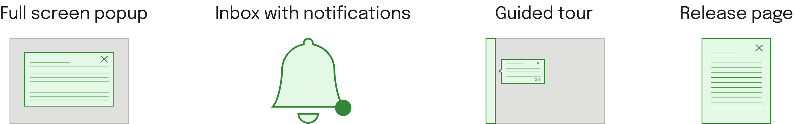
See explorations section for full evaluation.
14 solution concepts were explored!
...using the competitive analysis and UX goals as a starting point. Some of them are shown below!
06: Assessing mid-fi explorations
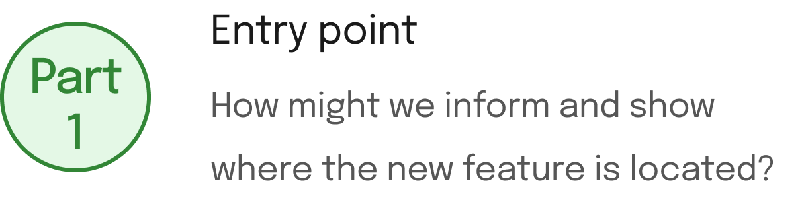
Guided tour
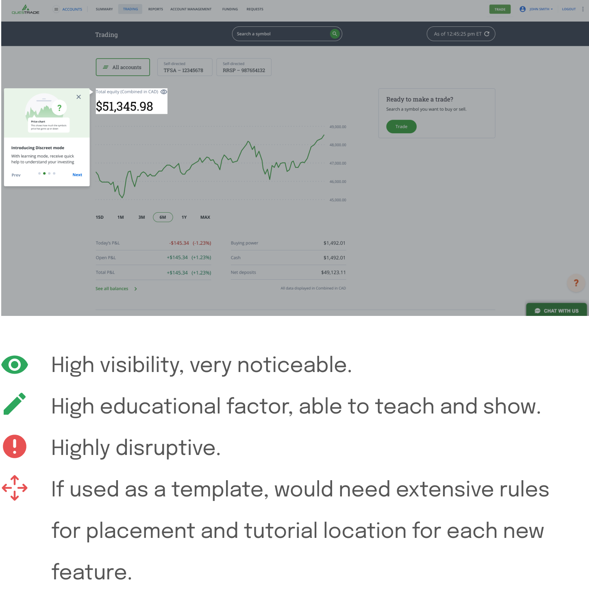Full screen popup
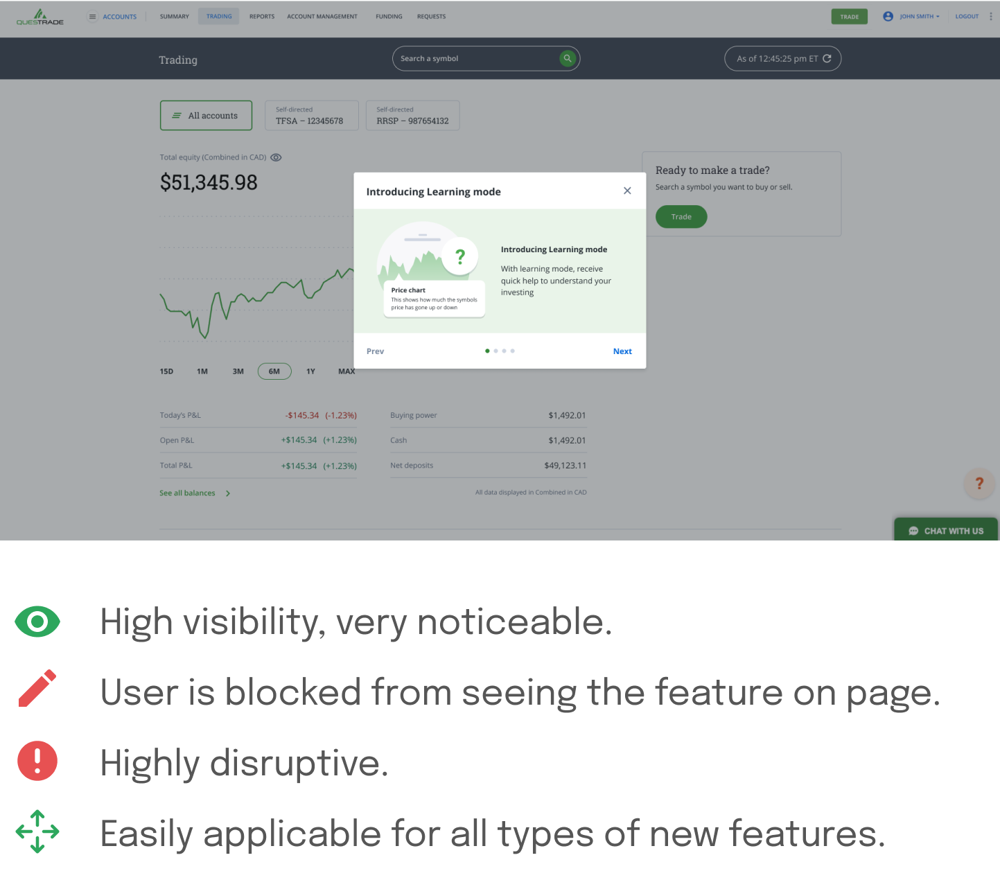Announcement banner
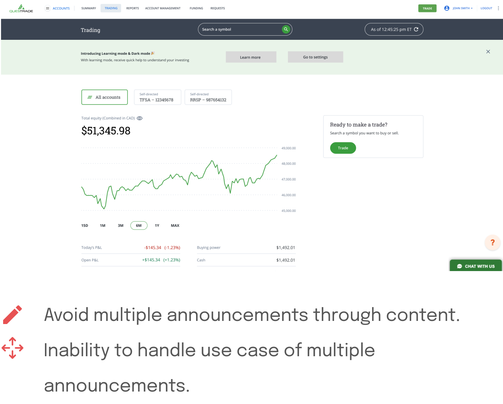Inline banner
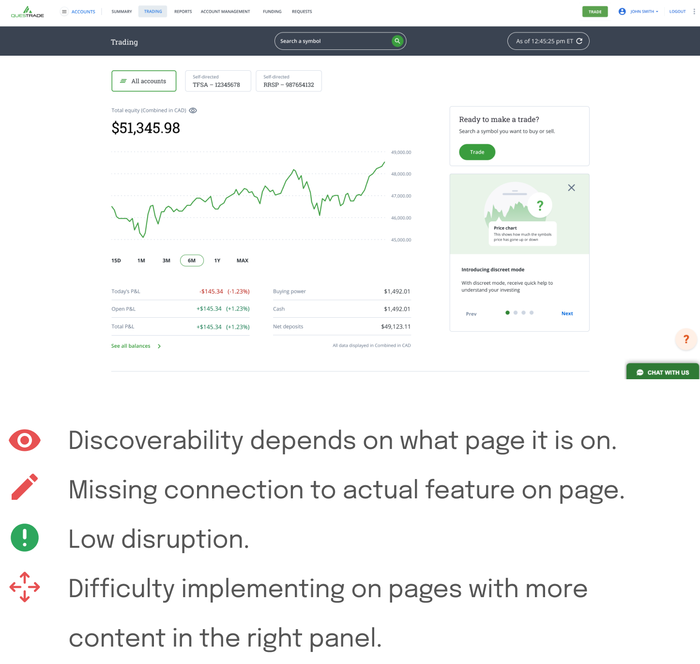Apply existing patttern of panel functionality (education mode panel)
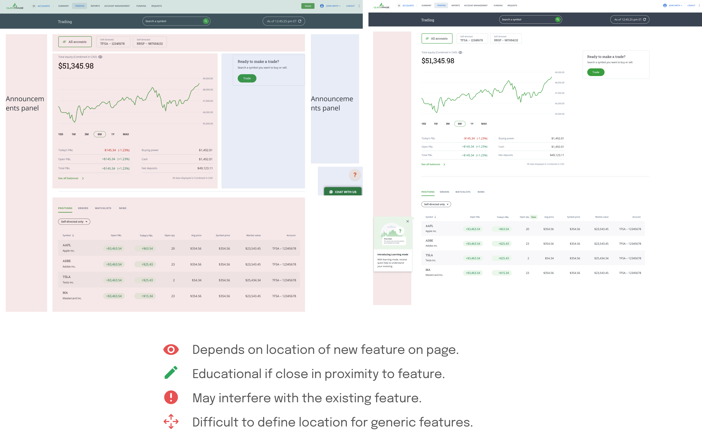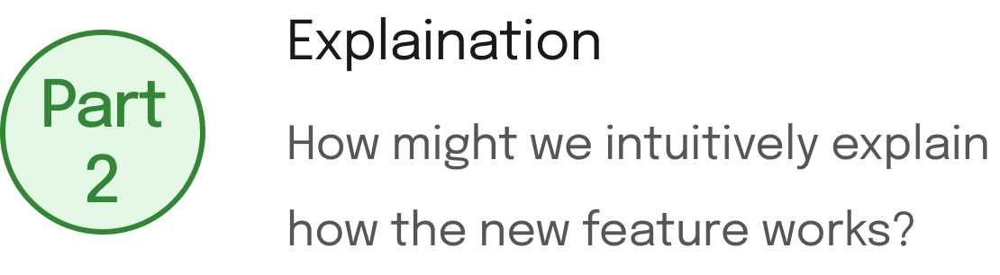
Entry point in help section
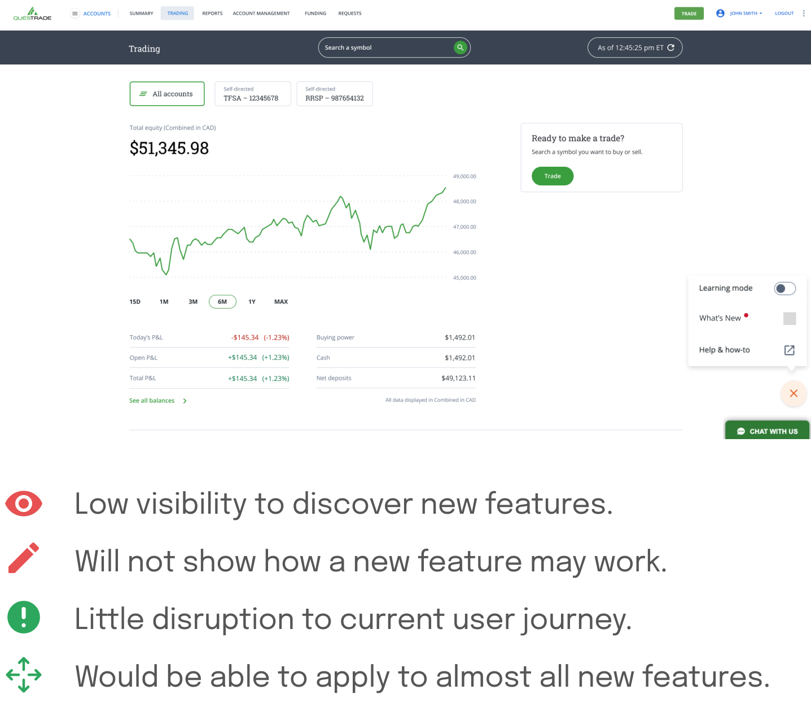NEW tag placed inline with new feature
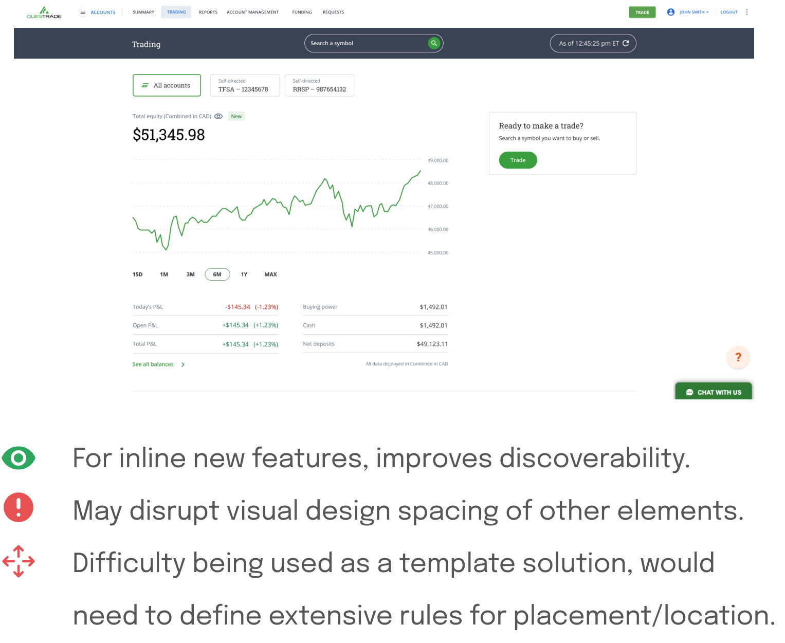
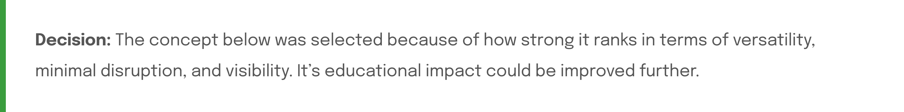
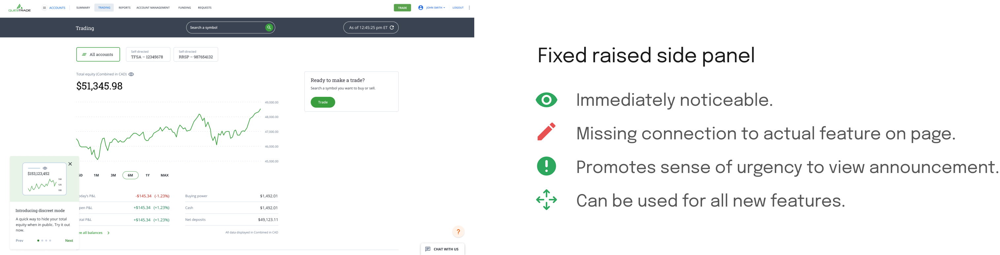
Making design decisions
07: Iterating on a concept
HMW strengthen the connection between where the feature announcement is placed, with the actual location of the new feature? HMW strengthen how to convey what the feature is?
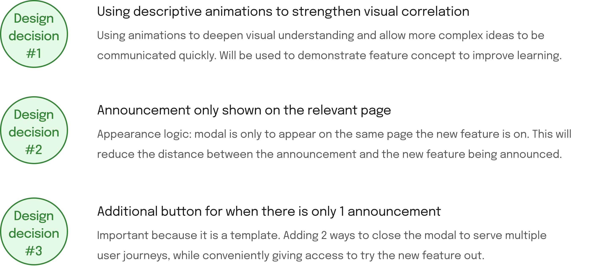
08: Final template design
1 announcement
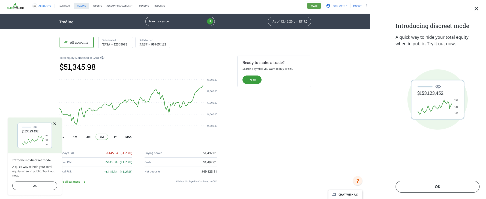Multiple announcements
Check out the feature, live on the platform!
Reflection
Stay high level, and stay broad
With template design, it’s extremely important to stay broad and take versatility highly into account when making decisions. It’s hard to train your brain to think broad (especially when there are many unknowns as to the type of new features that can be announced), but working in a lower fidelity and focusing purely on concept can be helpful.
Working with content and visual designers throughout my internship really emphasized my focus on designing for edge cases. It’s easy to get caught up in the details of visual behaviour or the type of content used, but really important to think about how the new feature impacts the product as a whole, and interacts with the current features. Especially with template design, thinking needs to be adaptive and conceptual.